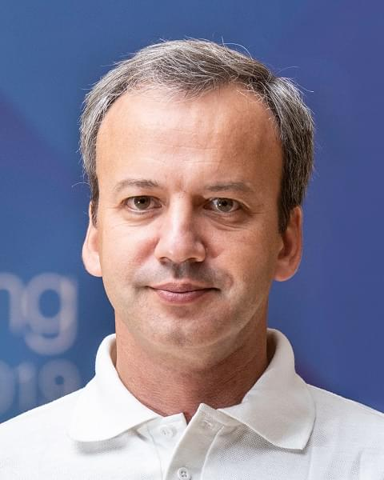

18.02.2020
Кто из алтайских шахматистов взялся покорить «Аэрофлот-Опен»

В столичной гостинице «Космос» с 18 по 28 февраля проводится один из самых сильных опен-турниров в мире «Аэрофлот-Опен». В турнире «А» участвуют в основном международные гроссмейстеры высокого класса, здесь рейтинг-лист возглавляет россиянин Владислав Артемьев. В турнире «В» играют в основном международные мастера и мастера ФИДЕ, здесь же 19-й рейтинговый номер у барнаульца Евгения Кардашевского. В турнире «С» выступают шахматисты с рейтингом 2300 и ниже. В этом году здесь также зарегистрировалось множество мастеров. Но мы будем переживать за алтайских ребят – Дмитрия Слизункова, Викторию Лоскутову и Дашу Хегай. Сегодня в столице пройдет открытие турнира (швейцарская система 9 туров). Первый тур будет сыгран 19 февраля. Болеем за наших! На фото (слева – направо): Евгений Кардашевский, международный гроссмейстер из Москвы Владимир Федосеев и почти гроссмейстер из Бердска Иван Бочаров.
Заголовок 2
Заголовок3
Заголовок4
В столичной гостинице «Космос» с 18 по 28 февраля проводится один из самых сильных опен-турниров в мире «Аэрофлот-Опен». В турнире «А» участвуют в основном международные гроссмейстеры высокого класса, здесь рейтинг-лист возглавляет россиянин Владислав Артемьев. В турнире «В» играют в основном международные мастера и мастера ФИДЕ, здесь же 19-й рейтинговый номер у барнаульца Евгения Кардашевского. В турнире «С» выступают шахматисты с рейтингом 2300 и ниже. В этом году здесь также зарегистрировалось множество мастеров. Но мы будем переживать за алтайских ребят – Дмитрия Слизункова, Викторию Лоскутову и Дашу Хегай. Сегодня в столице пройдет открытие турнира (швейцарская система 9 туров). Первый тур будет сыгран 19 февраля. Болеем за наших! На фото (слева – направо): Евгений Кардашевский, международный гроссмейстер из Москвы Владимир Федосеев и почти гроссмейстер из Бердска Иван Бочаров. В столичной гостинице «Космос» с 18 по 28 февраля проводится один из самых сильных опен-турниров в мире «Аэрофлот-Опен». В турнире «А» участвуют в основном международные гроссмейстеры высокого класса, здесь рейтинг-лист возглавляет россиянин Владислав Артемьев. В турнире «В» играют в основном международные мастера и мастера ФИДЕ, здесь же 19-й рейтинговый номер у барнаульца Евгения Кардашевского. В турнире «С» выступают шахматисты с рейтингом 2300 и ниже. В этом году здесь также зарегистрировалось множество мастеров. Но мы будем переживать за алтайских ребят – Дмитрия Слизункова, Викторию Лоскутову и Дашу Хегай. Сегодня в столице пройдет открытие турнира (швейцарская система 9 туров). Первый тур будет сыгран 19 февраля. Болеем за наших! На фото (слева – направо): Евгений Кардашевский, международный гроссмейстер из Москвы Владимир Федосеев и почти гроссмейстер из Бердска Иван Бочаров.← Вернуться назад